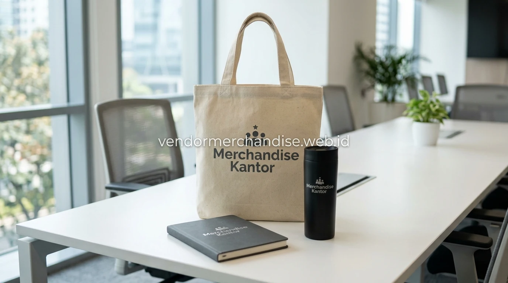

Seminar kit menjadi solusi praktis bagi tim event yang ingin menyiapkan seluruh kebutuhan merchandise peserta dalam satu paket, tanpa perlu memesan setiap item secara terpisah. Merchandise Kantor menyediakan susunan seminar kit yang fleksibel, mulai dari paket dasar hingga paket lengkap dengan tambahan aksesori lain.
Apa Saja Isi Paket Merchandise Seminar Kit yang Umum Dipesan?
Isi paket merchandise seminar kit dapat disesuaikan dengan kebutuhan acara, namun umumnya terdiri dari kombinasi produk yang mendukung aktivitas peserta selama sesi seminar berlangsung, mulai dari mencatat materi hingga membawa perlengkapan acara.
Kombinasi produk yang umum termasuk dalam seminar kit:
- Tumbler atau botol minum custom logo
- Notebook dan pulpen untuk mencatat materi seminar
- Tas atau tote bag sebagai wadah seluruh perlengkapan
- Lanyard atau id card holder untuk kebutuhan registrasi peserta
- Gantungan kunci atau merchandise tambahan sebagai pelengkap paket
Tumbler dan Notebook sebagai Item Inti Seminar Kit
Tumbler dan notebook menjadi dua item yang paling sering dimasukkan ke dalam paket seminar kit karena memiliki fungsi langsung terhadap aktivitas peserta selama seminar berlangsung, yaitu kebutuhan minum dan mencatat materi yang disampaikan narasumber.

Kedua produk ini dapat dicetak dengan logo dan warna korporat yang konsisten, sehingga identitas penyelenggara tetap terlihat jelas meski peserta hanya membawa sebagian item dari paket seminar kit.
Tas dan Lanyard sebagai Kelengkapan Registrasi Peserta
Tas atau tote bag dalam paket seminar kit berfungsi sebagai wadah untuk membawa seluruh item lain, sementara lanyard digunakan sebagai identitas peserta selama proses registrasi dan berlangsungnya acara seminar di lokasi.
Kombinasi tas dan lanyard yang senada dari sisi warna dan desain juga membantu menciptakan kesan seminar kit yang lebih rapi dan profesional saat dibagikan kepada peserta.
Bagaimana Menyesuaikan Seminar Kit dengan Budget Acara?
Penyesuaian seminar kit dengan budget acara dapat dilakukan dengan memilih kombinasi item yang paling relevan terlebih dahulu, kemudian menambahkan item pelengkap lain apabila anggaran masih memungkinkan, tanpa mengurangi fungsi utama paket bagi peserta.
Beberapa pendekatan yang dapat digunakan untuk menyesuaikan budget:
- Prioritaskan notebook dan pulpen sebagai item wajib dengan biaya produksi efisien
- Tambahkan tumbler apabila budget mencukupi untuk item dengan nilai fungsional lebih tinggi
- Gunakan tote bag berbahan sederhana untuk menekan biaya produksi paket
- Sesuaikan jumlah item dalam satu paket dengan total anggaran yang tersedia per peserta
Bagaimana Proses Pemesanan Merchandise Seminar Kit dalam Jumlah Besar?
Pemesanan merchandise seminar kit dalam jumlah besar di Merchandise Kantor dimulai dari penentuan kombinasi item, jumlah peserta, dan budget yang tersedia, dilanjutkan dengan proses desain, approval, hingga produksi sesuai jadwal acara.
Tahapan umum yang dapat diikuti:
- Tentukan kombinasi item yang akan dimasukkan ke dalam seminar kit
- Sesuaikan jumlah paket dengan estimasi peserta seminar
- Kirim logo dan tema desain untuk proses mock up seluruh item
- Approval desain sebelum produksi dimulai
- Produksi dan quality control dengan buffer waktu sebelum hari acara
Untuk kebutuhan yang lebih spesifik, perusahaan dapat menjelajahi pilihan merchandise event custom untuk perusahaan dan merchandise seminar custom untuk peserta sebagai bagian dari kebutuhan seminar kit yang lebih lengkap.
"Paket seminar kit yang dipadukan secara rapi menciptakan kesan pertama yang profesional bagi seluruh peserta dan instansi."
— Erlang Sinatrya, Penulis Merchandise Kantor

Pesan Merchandise Seminar Kit Sekarang di Merchandise Kantor
Merchandise Kantor siap membantu tim event, HR, dan procurement perusahaan maupun instansi menyiapkan paket merchandise seminar kit custom logo dengan kombinasi produk yang fleksibel sesuai budget acara. Hubungi tim Merchandise Kantor sekarang untuk konsultasi paket dan estimasi harga sesuai jumlah peserta seminar Anda.